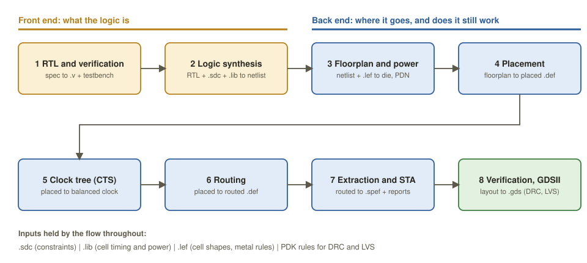
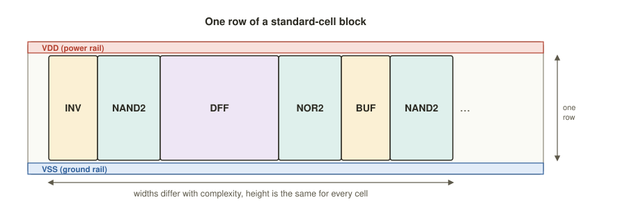

Chapter 1: The RTL-to-GDSII Flow¶
This chapter draws the map of the whole territory before we study each region in turn. It names the eight stages that turn a hardware description into a manufacturable layout, says what goes into and comes out of each, and separates the front end, which decides what the logic is, from the back end, which decides where it goes. It then introduces the three things every later chapter takes for granted: the process design kit and its standard cells, the chain of files that carries the design from stage to stage, and the three goals (power, performance and area) between which every decision is a compromise. The chapter ends with the tools that do the work and with a warning about the commonest misunderstanding in the subject: that a design which simulates correctly is therefore a design that works.
Learning outcomes
After this chapter you can:
- Name the stages from RTL to GDSII and say what goes in and what comes out of each.
- Tell the front end from the back end.
- Explain what a PDK and a standard-cell library are, and why a chip is built from ready-made cells.
- Recognise the key file formats and state the power, performance and area trade-off.
- Name the open-source tools that do each job.
1.1 Two worlds¶
At one end of the flow is RTL, the register-transfer level: a description, in Verilog, SystemVerilog or VHDL, of a circuit as registers and the logic that computes each register's next value between clock edges. Two lines are enough to describe an adder whose result is captured on every clock edge:
always @(posedge clk)
sum <= a + b;
At the other end is GDSII (Graphic Design System II), the industry-standard binary stream format for a finished layout. A GDSII file holds no logic at all. It is a database of polygons, millions of them, each on one of several dozen layers, and each layer corresponds to a mask that the factory will make. The whole subject of this book is the mechanical, and in the end provable, transformation of the first description into the second without changing what the circuit does.
The flow divides cleanly into two halves that even have different job titles.
The front end, or logic design, consists of writing the RTL, verifying it, and synthesising it into gates. Its product is a netlist: a list of ready-made gates and the wires that join them. The question the front end answers is what is the logic?
The back end, or physical design, takes the netlist and gives every gate and every wire a place and a shape on the silicon: floorplan, power, placement, clock tree, routing, extraction, signoff and GDSII. Its question is where does it go, and does it still work once the physics is included?
An analogy
Think of building a house. The front end is the architect's plan: which rooms there are and how they connect. The back end is the builders, who decide where every brick goes and where the pipes run, together with the inspector who checks that the walls stand up.
1.2 The eight stages¶
Figure 1.1 shows the eight stages in order, with the main file that each one hands to the next. Table 1.1 gives the question each stage answers.

| # | Stage | World | In and out | The question it answers |
|---|---|---|---|---|
| 1 | RTL design and verification | Front end | specification to .v plus testbench |
Does the logic do the right thing? |
| 2 | Logic synthesis | Front end | RTL, .sdc, .lib to gate netlist |
Which gates implement it, and are they fast enough? |
| 3 | Floorplanning and power | Back end | netlist, .lef to die, core and power grid |
How big is the chip, and how does power reach every gate? |
| 4 | Placement | Back end | floorplan to placed .def |
Where does every standard cell sit? |
| 5 | Clock-tree synthesis (CTS) | Back end | placed design to balanced clock network | Does the clock reach every flip-flop at nearly the same moment? |
| 6 | Routing | Back end | placed design to routed .def |
Can every connection be drawn in metal, legally? |
| 7 | Extraction and timing signoff | Back end | routed design to .spef and timing reports |
With the real wires, is every path fast enough, and not too fast? |
| 8 | Physical verification and tapeout | Back end | layout to .gds, DRC and LVS clean |
Can the factory build it, and is it exactly the intended circuit? |
Table 1.1 The stages of the flow.
Each of stages 2 to 8 has a chapter of its own, in this order. Verification of the RTL (stage 1) is the subject of the book on hardware description languages and is taken as given here.
1.3 What kind of chip?¶
"Turning RTL into hardware" means very different things depending on the target. The flow of this book targets a standard-cell ASIC, but it helps to know its neighbours.
| Standard-cell ASIC | FPGA | Full custom | |
|---|---|---|---|
| What it is | custom masks, built from a library of ready-made cells | a reprogrammable fabric of lookup tables, multipliers and block RAM | every transistor drawn by hand |
| Design effort | high: the full RTL-to-GDSII flow | low to medium: synthesis and place-and-route in the vendor's tool | extreme: months for a single block |
| Up-front cost (NRE) | very high; the course quotes $100k to $10M or more for a mask set | almost none: you buy the chip | the highest of all |
| Cost per chip at volume | lowest | high, since you pay for unused fabric | low, but rarely at scale |
| Speed and power | excellent | modest; roughly 10 to 20 times the area of the equivalent ASIC and slower clocks | the best possible |
| Time to first chip | months | minutes, by recompiling a bitstream | very long |
| When to use it | high volume, tight power and speed, cost-sensitive products | prototypes, low volume, designs that must be updated in the field | memories, analogue and radio blocks, clock generators, the very latest cells |
Table 1.2 Three ways to turn a design into hardware. The cost figures are those quoted in the course material and are indicative only.
Rule of thumb
Prototype on an FPGA; build an ASIC once the volume pays for the masks; go full custom only for the few cells (memory bit cells, input and output circuits, clock generators) where a standard-cell library cannot compete. This book follows the ASIC path.
1.4 The PDK and the standard cells¶
A chip is never designed in the abstract. It is designed for one manufacturing process at one foundry, and everything needed to do that is packaged in the process design kit, or PDK: the geometric design rules, the transistor models, the definition of the mask layers and, most important for digital design, a standard-cell library.
A standard cell is a small, pre-designed and pre-measured logic gate: an inverter (INV), a two-input NAND (NAND2), a D flip-flop (DFF), a full adder, a buffer, often in several drive strengths (×1, ×2, ×4 and so on). The whole point of a standard-cell ASIC is that synthesis and place-and-route only ever arrange and connect these bricks and never touch an individual transistor.
All the cells of a library have the same height, a fixed number of routing tracks (the Sky130 high-density library uses a nine-track cell), and a width that depends on their complexity. Cells are placed side by side in horizontal rows. The power rail (VDD) runs along the top of every cell and the ground rail (VSS) along the bottom, so that when cells abut the rails join into continuous lines across the row. Because height never varies, a placer can pack thousands of cells like bricks.

The tools never look inside a cell. Each cell comes with two abstract views:
Liberty (.lib) is the timing and power model. For every path from an input pin to an output pin it gives the delay and the output transition time as tables indexed by the input transition time and the output load; it gives setup and hold requirements for flip-flops; and it gives leakage and switching power. The numbers are obtained by circuit simulation at several operating conditions, called corners. Static timing analysis and synthesis read this file.
LEF (.lef), the Library Exchange Format, is the physical outline: the cell's bounding box, the positions of its pins, and the regions that are blocked. It is enough to place and wire the cell without revealing its inside. A companion technology LEF describes the metal layers, the vias and the routing rules.
Sky130, a real and free PDK
The SkyWater Sky130 kit is a 130 nm process and the first production-capable PDK released under a free licence. Its standard-cell families, such as sky130_fd_sc_hd (high density), ship the .lib, the .lef and the layout of every cell. That is exactly what makes the whole open-source flow, and this book's exercises, possible without signing a non-disclosure agreement.
1.5 A chain of files¶
The flow is really a chain of file transformations. Knowing what each format carries, and which stage produces and consumes it, is half the battle of learning the subject.
| Extension | Contents | Made by, used by |
|---|---|---|
.v, .sv |
Verilog or SystemVerilog: the RTL, and later the gate-level netlist | designer and synthesis, then simulation, synthesis, place-and-route, LVS |
.sdc |
Synopsys Design Constraints: clocks, input and output delays, false and multicycle paths | designer, then synthesis, CTS, routing, timing |
.lib |
Liberty: characterised cell timing and power, one file per corner | foundry, then synthesis and timing |
.lef |
cell outlines, metal layers, vias and rules | PDK, then floorplan, placement, routing |
.def |
Design Exchange Format: component locations, nets and routes of the placed or routed design | each layout stage, then the next stage, extraction, GDS writing |
.spef |
Standard Parasitic Exchange Format: the resistance and capacitance of every net | extraction, then signoff timing and power analysis |
.gds, .oas |
GDSII, or its compact successor OASIS: the final polygons | layout and tapeout, then mask making, DRC, LVS |
.sdf |
Standard Delay Format: per-instance delays | timing, then gate-level timing simulation |
Table 1.3 The main file formats of the flow.
1.6 Three goals: power, performance, area¶
Every decision in the flow is a negotiation among three quantities, abbreviated PPA.
Power is the sum of dynamic power (the energy of switching) and leakage. It is set by the supply voltage, by how often signals toggle, and by how many and what kind of cells are used. Lower is better for batteries and for heat.
Performance is the highest clock frequency the design can run at. It is limited by the slowest path between two registers. A faster clock needs larger, hungrier cells.
Area is silicon, and silicon is paid for by the square millimetre. A smaller die means more dice per wafer and so a cheaper chip, but leaves less room for the buffers that timing may need and makes wiring harder.
These pull against one another. Push frequency and you spend power and area on stronger cells and more buffers; shrink the area and congestion makes routing, and therefore timing, harder. Good design finds the balance that the specification asks for.
Timing closure is the name for making every timing path meet its target, under every operating condition, so that no path has negative slack. A single path that is 30 ps too slow means the chip fails at its target clock. Closure often dominates the back-end schedule: synthesis, sizing, placement, clock-tree synthesis and routing are tweaked, again and again, until the histogram of slacks is entirely non-negative.
1.7 Open-source and commercial tools¶
The same flow can be run with the large commercial suites or with free tools. This book teaches the open-source stack because you can run every step yourself, today, at no cost.
| Job | Open source | Commercial |
|---|---|---|
| Synthesis | Yosys | Design Compiler, Genus |
| Floorplan, placement, CTS, routing, timing | OpenROAD | IC Compiler II, Innovus; PrimeTime, Tempus |
| Layout, rule checks, GDS | Magic, KLayout | Calibre, IC Validator, Pegasus |
| Layout-versus-netlist check | netgen | Calibre LVS, Pegasus |
| The whole flow in one command | OpenLANE | in-house scripts and vendor reference flows |
Table 1.4 Open-source and commercial tools for each job.
With OpenLANE the whole flow, from RTL and a configuration file to a GDSII layout, is a single command; Chapter 9 explains it in detail.
# The whole flow, one command, in OpenLANE
./flow.tcl -design spm # RTL (.v) + config -> GDSII
# Under the hood it runs, roughly:
# yosys synthesis -> netlist.v
# openroad floorplan, place, cts, route -> final.def
# magic DEF -> GDS, DRC
# netgen LVS (layout versus schematic)
1.8 "It simulates, so it works": not quite¶
Common misconception
"Once my Verilog simulates correctly, the chip works." Functional simulation checks the logic and ignores the physics. Real wires have resistance and capacitance. Gates take time, more when hot and less when the supply voltage is high. The clock reaches different flip-flops at slightly different moments. A logically perfect design can still fail on silicon because a signal arrives too late (a setup violation) or, surprisingly, too early (a hold violation).
That is why the back end exists: to place and wire the design and then to re-check it with real delays. Extraction and static timing signoff, Chapters 6 and 7, are the stages that bring the physics back.
Think about it
Synthesis needs the .lib to know cell delays, but accurate delays also depend on wire parasitics that do not exist until after placement and routing. How does synthesis estimate timing before any wires exist?
Answer
It uses wire-load models, statistical guesses of the capacitance of a net from its fan-out, or in modern flows a rough placement. The estimate is refined at every later stage as real locations and real wires become known. This chicken-and-egg loop is why the flow iterates and why slack left over by an early stage is so valuable later.
Summary¶
- RTL-to-GDSII turns a behavioural description into manufacturable polygons without changing what the circuit does.
- The front end is RTL, verification and synthesis, ending in a netlist. The back end is floorplan, power, placement, clock tree, routing, extraction and timing, physical verification and GDSII.
- A standard-cell ASIC is built only from the ready-made cells of one foundry's PDK; each cell has a
.libtiming view and a.lefphysical view. - The design passes through a chain of files:
.vand.sdc, then.defand.spef, and finally.gds. - Power, performance and area pull against each other; timing closure, making every path meet timing at every corner, is usually the hardest part.
- Yosys, OpenROAD, Magic, KLayout and netgen, orchestrated by OpenLANE, form a complete free flow.
Exercises¶
Exercise 1.1: The flow in order
Put these stages in flow order: routing, synthesis, clock tree, floorplan, extraction and timing, placement, physical verification.
Answer
Synthesis, floorplan, placement, clock tree, routing, extraction and timing, physical verification.
Exercise 1.2: Files
For each of .sdc, .lib, .lef, .def, .spef and .gds, say which stage produces it and which stages use it.
Answer
.sdc: written by the designer; read by synthesis, the layout stages and timing analysis..liband.lef: supplied by the PDK;.libis read by synthesis and timing,.lefby the layout tools..def: produced by each layout stage (floorplan, placement, CTS, routing) and read by the next one..spef: produced by extraction and read by signoff timing..gds: written at the end of layout and sent to the foundry; also read by DRC and LVS.
Exercise 1.3: Where do you go back to?
Which stage would you revisit for (a) a hold violation found after routing, (b) a die that is too big, (c) a functional bug found in gate-level simulation?
Answer
(a) The clock tree or routing, where hold buffers and skew are handled. (b) The floorplan: utilisation and aspect ratio. (c) The RTL itself. Synthesis only preserves the logic it is given, bugs included.
Exercise 1.4: Why the PDK first?
Why does an ASIC design need the foundry's PDK before synthesis can even start?
Answer
Synthesis builds the design only from the foundry's standard cells, and it needs their timing (.lib) to choose among them. With no library there are no gates to map to.
Exercise 1.5: Choosing a target
A start-up needs 500 units of a signal-processing board for field trials, and the algorithm is likely to change twice before launch. Which of the three targets in Table 1.2 would you choose, and why?
Answer
An FPGA. The volume is far too small to repay an ASIC mask set, the design must be updated in the field, and the time to a working board is minutes rather than months. An ASIC becomes attractive only if the product succeeds and the volume grows, and full custom is not justified at all.